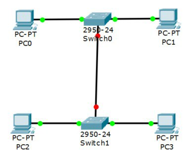

Лабораторная работа #3
Настройка коммутаторов и маршрутизаторов
Расчитываем диапазоны подсетей.
| - |
Lan A |
Lan B |
Lan C |
| Кол-во узлов |
12 |
457 |
78 |
| Subnet |
192.168.3.0 |
172.16.3.0 |
10.10.3.0 |
| Mask |
255.255.255.240 |
255.255.254.0 |
255.255.255.128 |
| Broadcast |
192.168.3.15 |
172.16.4.255 |
10.10.3.127 |
-
Помещаем на рабочее поле коммутатор и два компьютера, после чего соединяем их.
-
Добавляем еще один коммутатор с двумя компьютерами и настраиваем адресацию из другой подсети.
-
Соединяем коммутаторы между собой и проверяем работоспособность сети (Не работает, так как коммутаторы подсоединяются только к маршрутизаторам).

-
Добавляем маршрутизатор.
-
Добавляем еще один маршрутизатор. Подключаем к нему коммутатор и компьютер.
| Устройство |
IP - адрес |
Маска |
Шлюз |
| PC0 |
192.168.3.14 |
255.255.255.240 |
192.168.3.1 |
| PC1 |
192.168.3.13 |
255.255.255.240 |
192.168.3.1 |
| PC2 |
172.16.4.254 |
255.255.254.0 |
172.16.3.1 |
| PC3 |
172.16.4.253 |
255.255.254.0 |
172.16.3.1 |
| PC4 |
10.10.3.126 |
255.255.255.128 |
10.10.3.1 |
| R0 0/0 |
192.168.3.1 |
255.255.255.240 |
- |
| R0 0/1 |
172.16.3.1 |
255.255.254.0 |
- |
| R0 0/2 |
15.15.3.2 |
255.255.255.252 |
- |
| R1 0/1 |
10.10.3.1 |
255.255.255.128 |
- |
| R1 0/2 |
15.15.3.1 |
255.255.255.252 |
- |
Настройка статической маршрутизации производится при помощи команды: ip route [сеть назначения] [маска] [маршрут]
Установка баннера на сетевое оборудование: banner motd [баннер]
Проверка работоспособности сети: